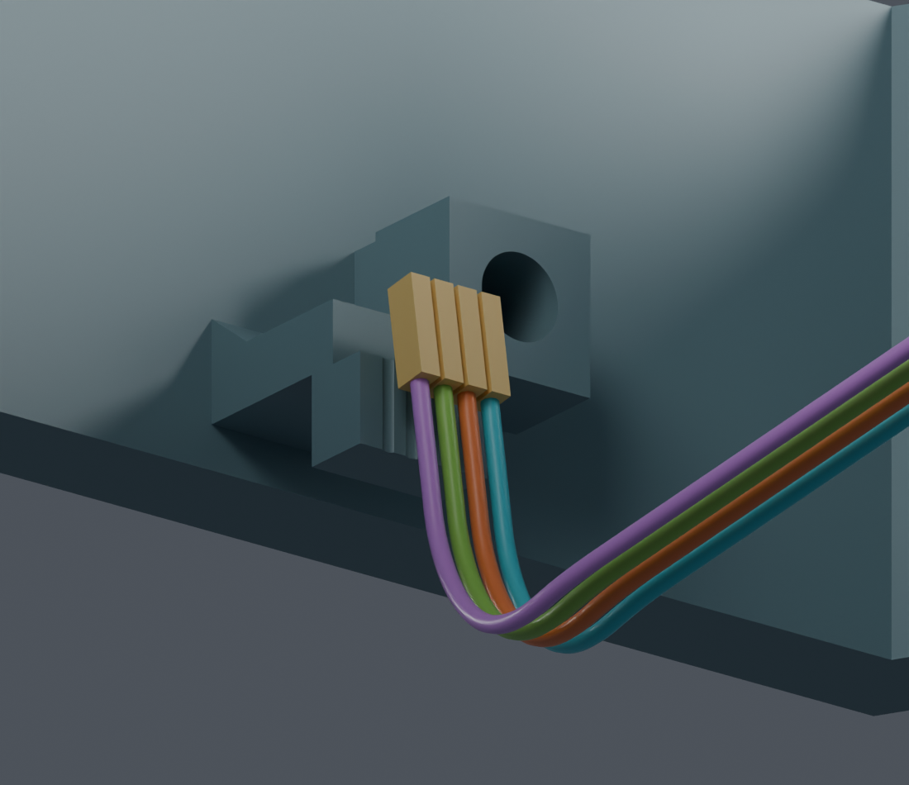
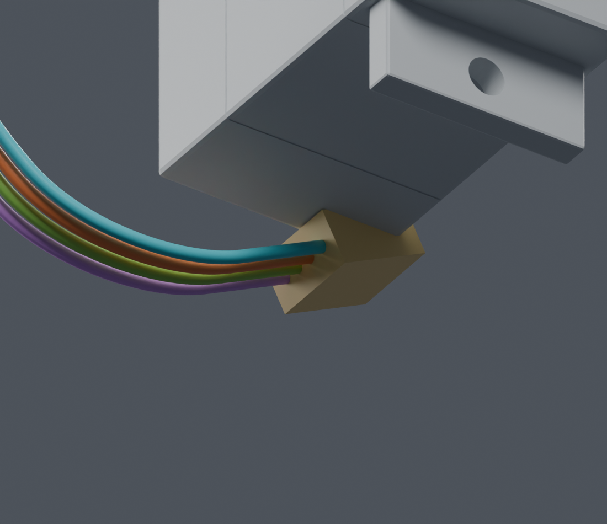

原41位置通过只是初筛。连续检查在接近最终位置时发现端子与头托间隙约0.298mm，低于0.3mm要求；原路线未通过。主模型M1.47未改。
最后一根从负侧绕开旧路线的相交位置，四段规定动作与步骤衔接检查通过。板卡8→2mm连续下降也已通过。初始穿线、端子入壳、扎带和完整装配仍未完成。查看当前路线与证据
新增同料号的官方细节图显示：下方锁止弹片超出 1.35 mm 尺寸线。旧方盒不含完整弹片，不能用来确认真实端子装配。查看原图与新增尺寸。
JST官方SH目录给出端子0.8×1.35×3.9mm标称跨度。金色为按此构造的检查包络，不是实际压接CAD。实际CAM插座料号和针腔视图仍待确认。


散端子在上方2mm完成成形，再准备装入胶壳；CAM板从8mm降到2mm完成相对插合，随后沿既有落座曲线降到0mm。71个成形位置和25个板卡下降位置通过初筛。没有拉长导线、挪动最终板卡或修改支架。
| 项目 | 状态 |
|---|---|
| 原路线连续过程 | BLOCKED；1480个区间已证，另31个末段区间未通过，完整覆盖未完成。 |
| 新2mm候选 | 新路线四线规定成形动作及板卡下降连续PASS；初次穿线、端子入壳和完整工序仍未完成。 |
| 固定槽与端子间隙 | 槽的名义径向余量约0.02mm；裸端子彼此只有0.2mm标称间隙，仍需实物配合与装壳顺序核对。 |
| 完整线束 | 未完成：线间、端子对导线、装壳、扎带、初次穿线及其他线路仍需继续。 |
供应商按图制作已确定。公开资料由项目搜集，线路与裁线图由项目设计。尚无正式裁线图和制造放行。
完整说明 · 连续失败记录 · 2mm候选结果 · 6mm候选的板卡冲突 · 原9mm候选Blender · 命令 · 交付记录